Soru 1Cevap: C
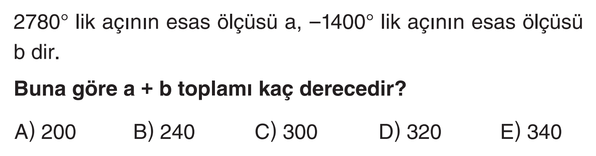
Çözüm
- $2780^\circ = 7\cdot 360^\circ + 260^\circ$ olduğundan $a = 260^\circ$.
- $-1400^\circ + 4\cdot 360^\circ = 40^\circ$ olduğundan $b = 40^\circ$.
- $a + b = 260^\circ + 40^\circ = 300^\circ$.
Cevap: C
Soru 2Cevap: D
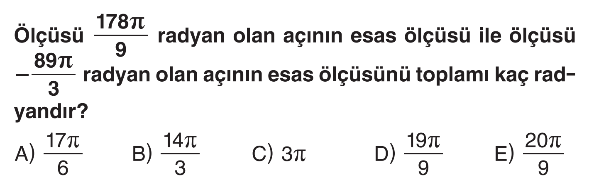
Çözüm
- $\frac{178\pi}{9} = 18\pi + \frac{16\pi}{9}$ ($18\pi$, $2\pi$'nin katı) → esas ölçü $\frac{16\pi}{9}$.
- $-\frac{89\pi}{3} + 30\pi = \frac{\pi}{3} = \frac{3\pi}{9}$ → esas ölçü $\frac{3\pi}{9}$.
- Toplam: $\frac{16\pi}{9} + \frac{3\pi}{9} = \frac{19\pi}{9}$.
Cevap: D
Soru 3Cevap: E
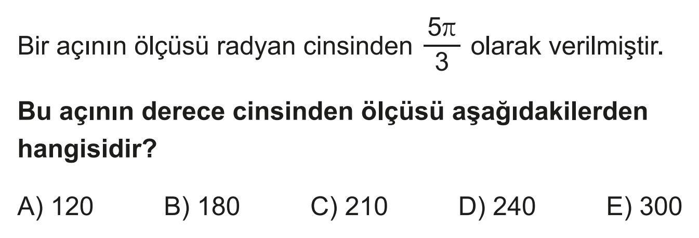
Çözüm
- $\frac{D}{180} = \frac{R}{\pi}$ bağıntısında $R = \frac{5\pi}{3}$ yazılır.
- $D = 180\cdot\frac{5}{3}$
- $D = 300^\circ$.
Cevap: E
Soru 4Cevap: C
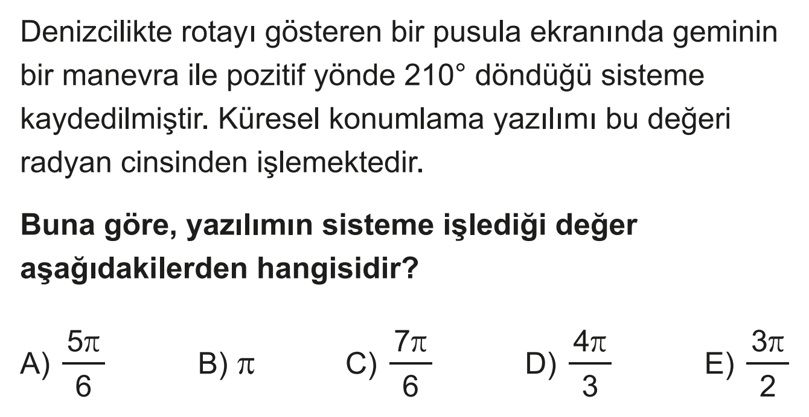
Çözüm
- $\frac{D}{180} = \frac{R}{\pi}$ bağıntısında $D = 210$ yazılır.
- $R = \frac{210\pi}{180}$
- $R = \frac{7\pi}{6}$ radyan.
Cevap: C
Soru 5Cevap: B
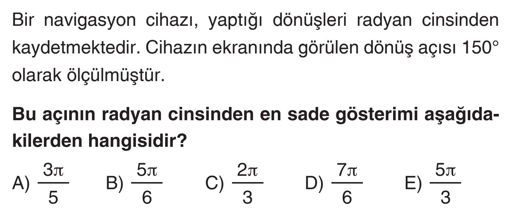
Çözüm
- $R = \frac{D\cdot\pi}{180}$ kullanılır.
- $R = \frac{150\pi}{180}$
- sadeleşince $R = \frac{5\pi}{6}$.
Cevap: B
Soru 6Cevap: B
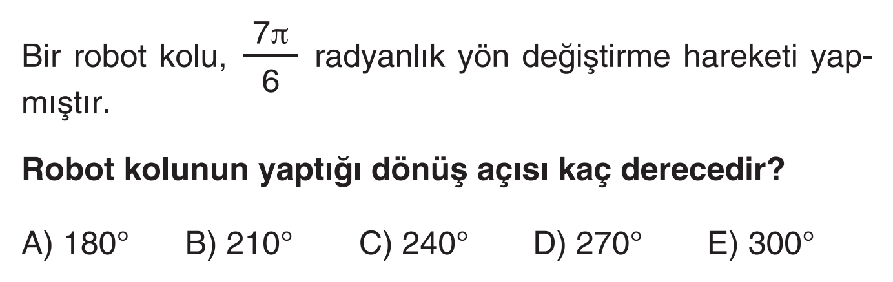
Çözüm
- $\pi$ radyan $= 180^\circ$'dir.
- $\frac{7\pi}{6} = 7\cdot\frac{180^\circ}{6}$
- $= 7\cdot 30^\circ = 210^\circ$.
Cevap: B
Soru 7Cevap: C
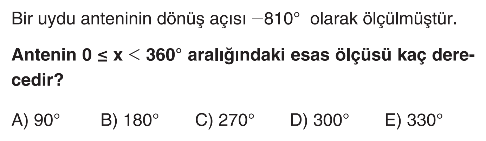
Çözüm
- Negatif açının esas ölçüsü için $360^\circ$'nin katları eklenir.
- $-810^\circ + 3\cdot 360^\circ = -810^\circ + 1080^\circ$
- $= 270^\circ$.
Cevap: C
Soru 8Cevap: B
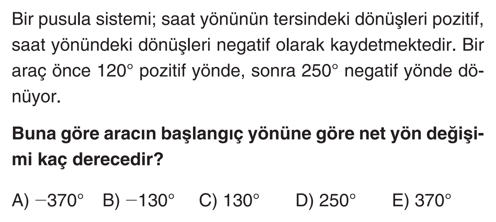
Çözüm
- Pozitif dönüş $+120^\circ$, negatif dönüş $-250^\circ$ olarak yazılır.
- Net dönüş $= 120^\circ + (-250^\circ)$
- $= -130^\circ$.
Cevap: B
Soru 9Cevap: E
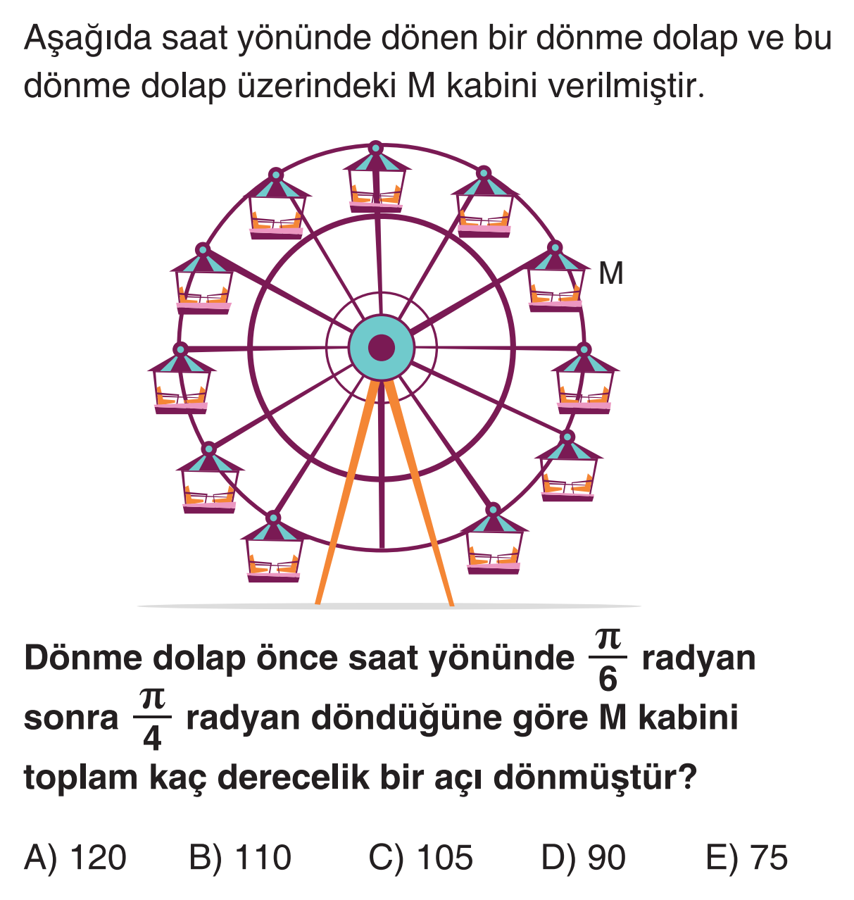
Çözüm
- $\frac{\pi}{6}$ radyan $= 30^\circ$.
- $\frac{\pi}{4}$ radyan $= 45^\circ$.
- İki dönüş aynı yönde olduğundan toplam $30^\circ + 45^\circ = 75^\circ$.
Cevap: E
Soru 10Cevap: C
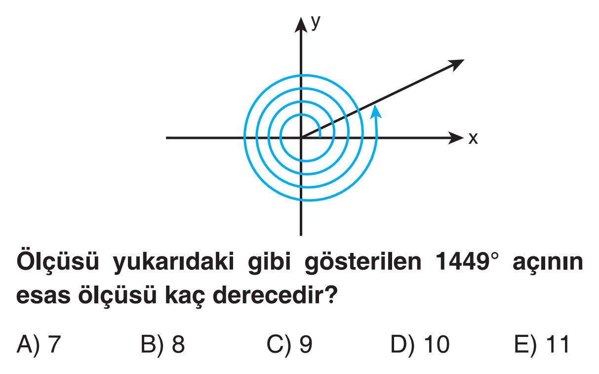
Çözüm
- $1449^\circ$ içindeki $360^\circ$'nin katları bulunur: $4\cdot 360^\circ = 1440^\circ$.
- $1449^\circ = 1440^\circ + 9^\circ$
- Esas ölçü $9^\circ$.
Cevap: C
Soru 11Cevap: B
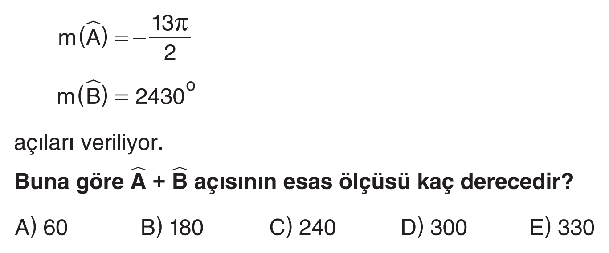
Çözüm
- $m(\hat A) = -\frac{13\pi}{2} = -13\cdot 90^\circ = -1170^\circ$.
- $m(\hat A) + m(\hat B) = -1170^\circ + 2430^\circ = 1260^\circ$.
- $1260^\circ - 3\cdot 360^\circ = 180^\circ$ → esas ölçü $180^\circ$.
Cevap: B
Soru 12Cevap: B
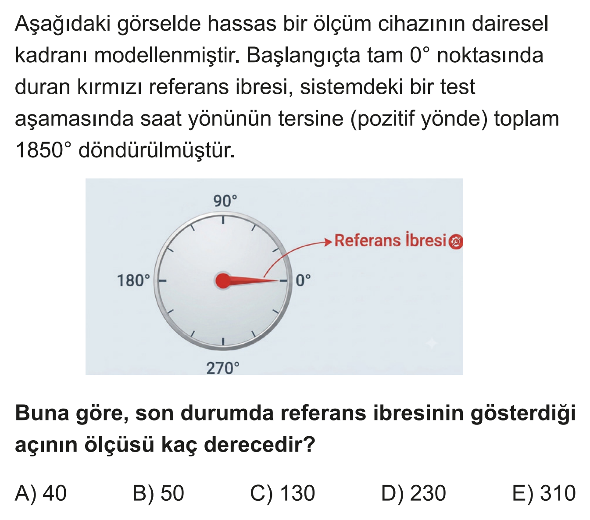
Çözüm
- $1850^\circ$ içindeki tam turlar: $5\cdot 360^\circ = 1800^\circ$.
- $1850^\circ - 1800^\circ = 50^\circ$
- İbre $50^\circ$'yi gösterir.
Cevap: B
Soru 13Cevap: A
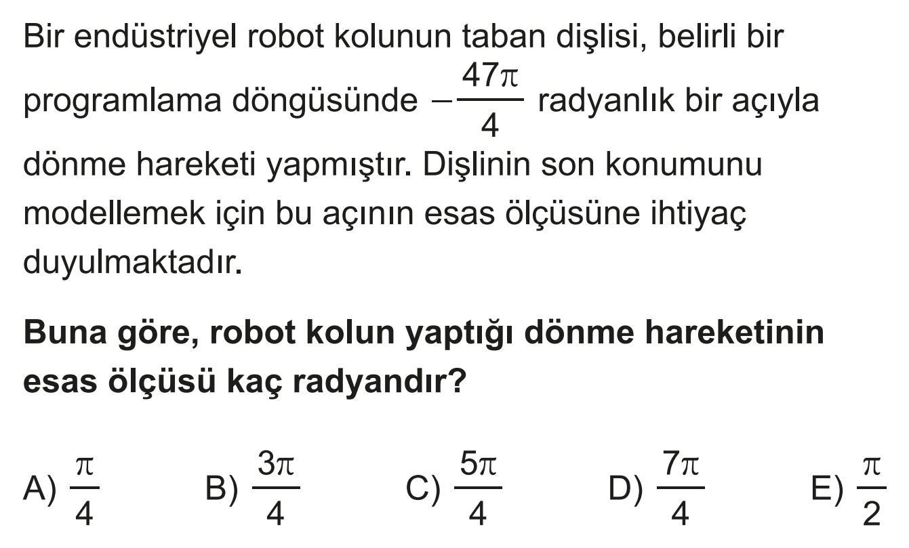
Çözüm
- $2\pi = \frac{8\pi}{4}$; $-\frac{47\pi}{4}$'e $6\cdot 2\pi = \frac{48\pi}{4}$ eklenir.
- $-\frac{47\pi}{4} + \frac{48\pi}{4} = \frac{\pi}{4}$
- Esas ölçü $\frac{\pi}{4}$ radyan.
Cevap: A
Soru 14Cevap: E
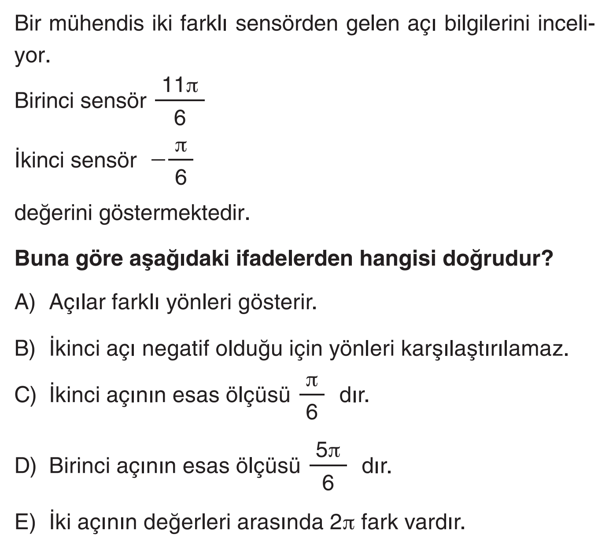
Çözüm
- Birinci açı $\frac{11\pi}{6}$ zaten $[0, 2\pi)$ aralığındadır.
- İkinci açı: $-\frac{\pi}{6} + 2\pi = \frac{11\pi}{6}$; iki açı aynı yönü gösterir.
- Farkları $\frac{11\pi}{6} - \left(-\frac{\pi}{6}\right) = 2\pi$ → E doğrudur.
Cevap: E
Soru 15Cevap: C
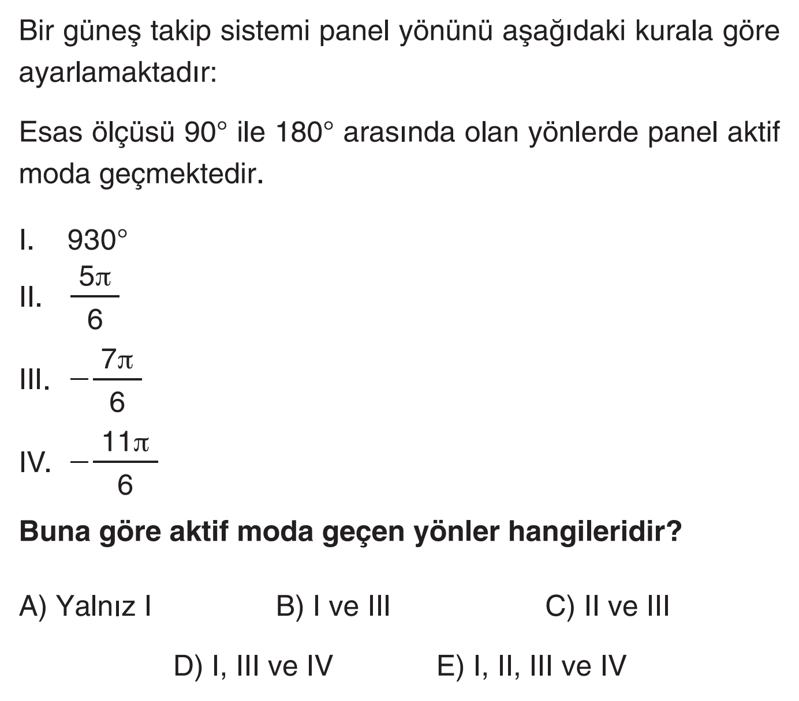
Çözüm
- I: $930^\circ - 720^\circ = 210^\circ$ → aralıkta değil.
- II: $\frac{5\pi}{6} = 150^\circ$ ✓. III: $-\frac{7\pi}{6} + 2\pi = \frac{5\pi}{6} = 150^\circ$ ✓.
- IV: $-\frac{11\pi}{6} + 2\pi = \frac{\pi}{6} = 30^\circ$ → değil. Cevap II ve III.
Cevap: C
Soru 16Cevap: E
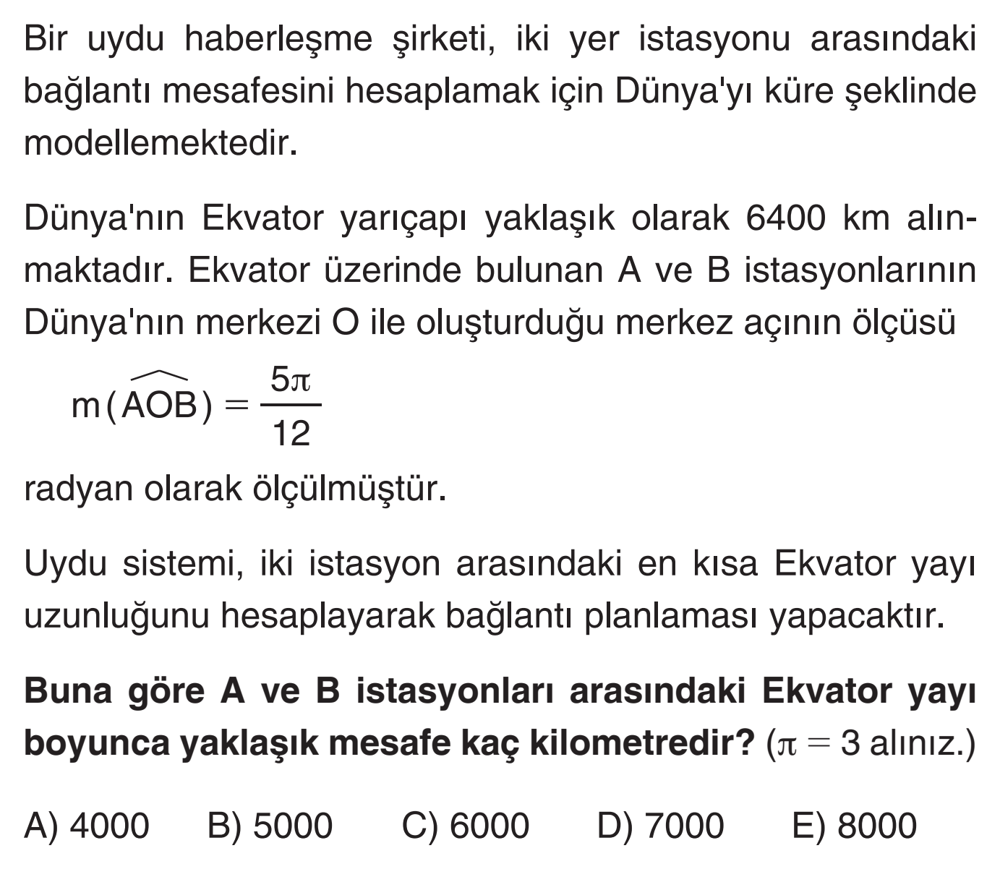
Çözüm
- Yay uzunluğu $= r\cdot\theta$ ($\theta$ radyan).
- $6400\cdot\frac{5\pi}{12}$ ve $\pi = 3$ alınırsa $6400\cdot\frac{15}{12}$
- $= 8000$ km.
Cevap: E
Soru 17Cevap: D
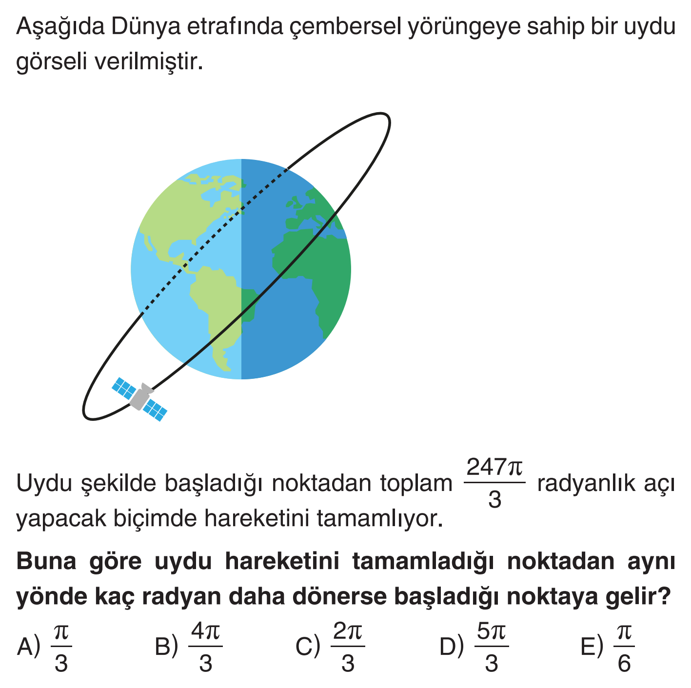
Çözüm
- $\frac{247\pi}{3} = 82\pi + \frac{\pi}{3}$ ($82\pi$ = 41 tam tur).
- Uydu başladığı noktadan $\frac{\pi}{3}$ ileride durur.
- Başlangıca dönmek için $2\pi - \frac{\pi}{3} = \frac{5\pi}{3}$ radyan daha dönmelidir.
Cevap: D
Soru 18Cevap: A
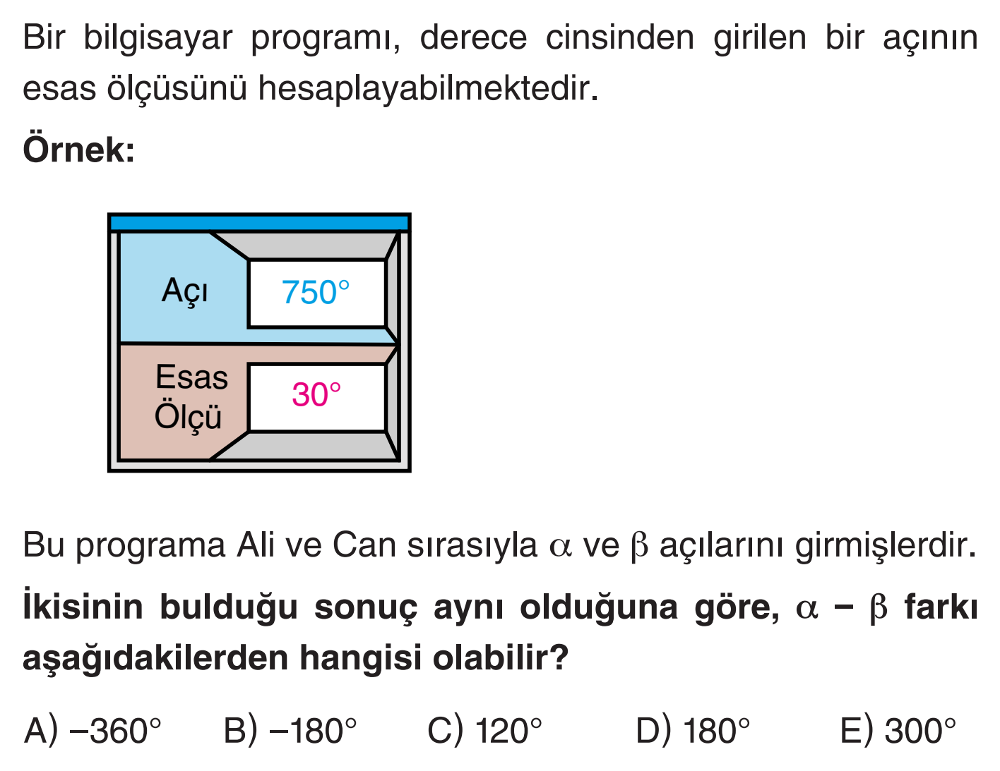
Çözüm
- Esas ölçüleri aynı olan açılar $360^\circ$'nin tam katı kadar farklıdır.
- $\alpha - \beta = k\cdot 360^\circ$ ($k\in\mathbb{Z}$).
- Seçeneklerde yalnız $-360^\circ$ bu biçimdedir.
Cevap: A
Soru 19Cevap: D
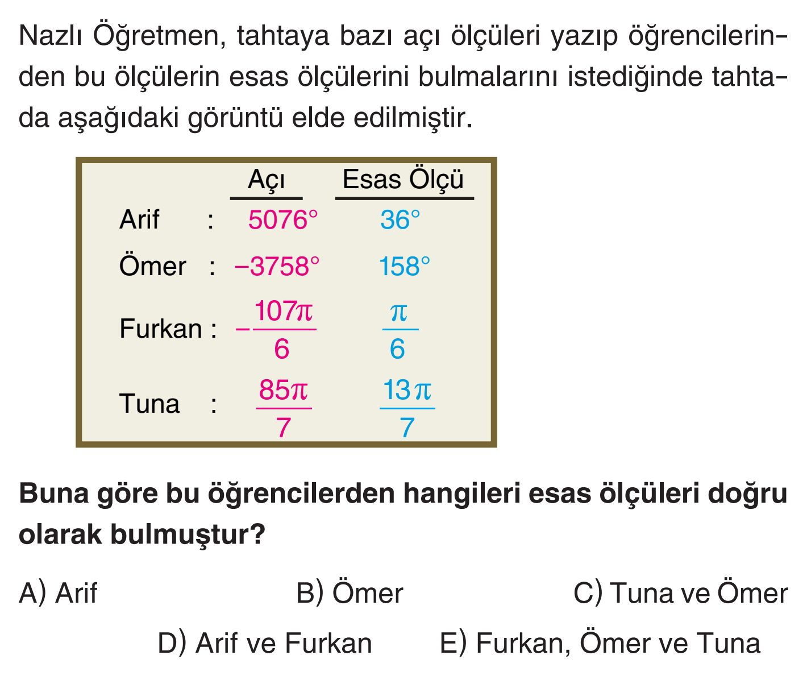
Çözüm
- Arif: $5076^\circ - 14\cdot 360^\circ = 36^\circ$ ✓. Ömer: $-3758^\circ + 11\cdot 360^\circ = 202^\circ$ ✗.
- Furkan: $-\frac{107\pi}{6} + 18\pi = \frac{\pi}{6}$ ✓.
- Tuna: $\frac{85\pi}{7} = 12\pi + \frac{\pi}{7}$ → $\frac{\pi}{7}$ ✗. Doğru bulanlar Arif ve Furkan.
Cevap: D
Soru 20Cevap: E
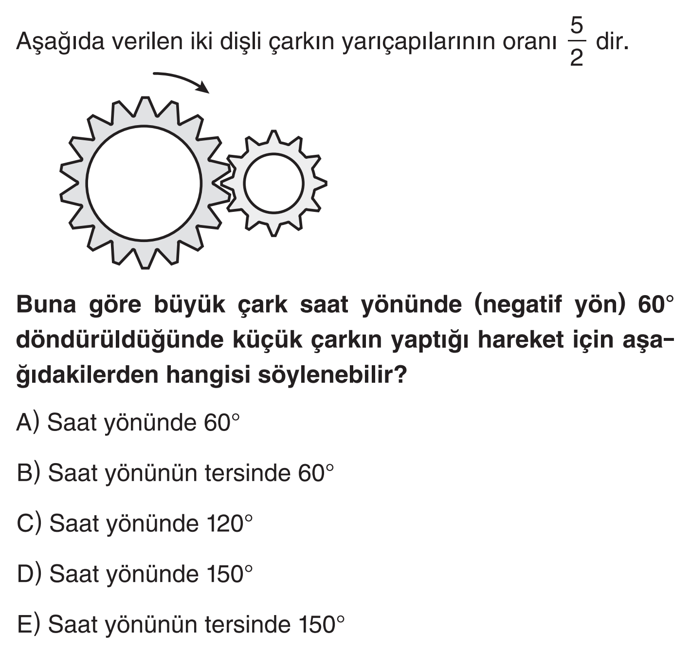
Çözüm
- Birbirini çeviren dişlilerde (yarıçap × açı) eşittir ve yönler zıttır.
- $\frac{r_b}{r_k} = \frac{5}{2}$ ise $\theta_k = 60^\circ\cdot\frac{5}{2} = 150^\circ$.
- Büyük çark saat yönünde döndüğünden küçük çark saat yönünün tersinde $150^\circ$ döner.
Cevap: E
Soru 21Cevap: D
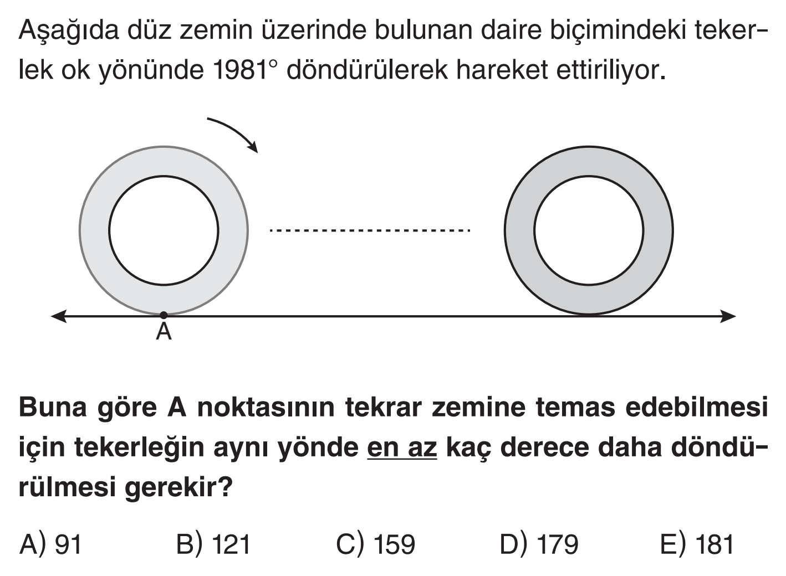
Çözüm
- $1981^\circ = 5\cdot 360^\circ + 181^\circ$.
- A noktası zeminden itibaren $181^\circ$ dönmüş konumdadır.
- Yeniden zemine değmesi için $360^\circ - 181^\circ = 179^\circ$ daha dönmelidir.
Cevap: D
Soru 22Cevap: E
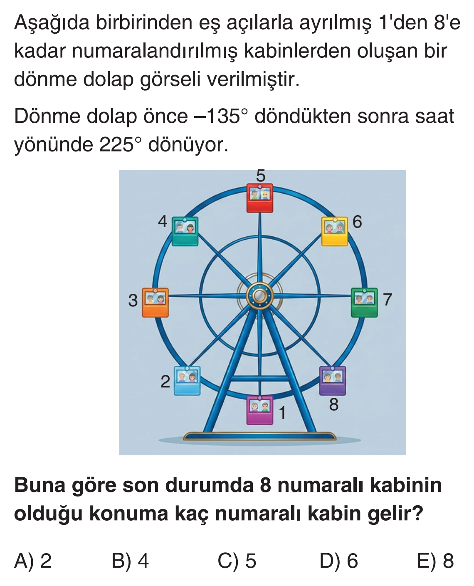
Çözüm
- $-135^\circ$ saat yönünde dönüştür; ardından saat yönünde $225^\circ$ daha döner.
- Toplam dönüş $-135^\circ - 225^\circ = -360^\circ$ (bir tam tur).
- Dolap ilk konumuna gelir; 8 numaralı kabinin konumunda yine 8 numaralı kabin vardır.
Cevap: E
Soru 23Cevap: C
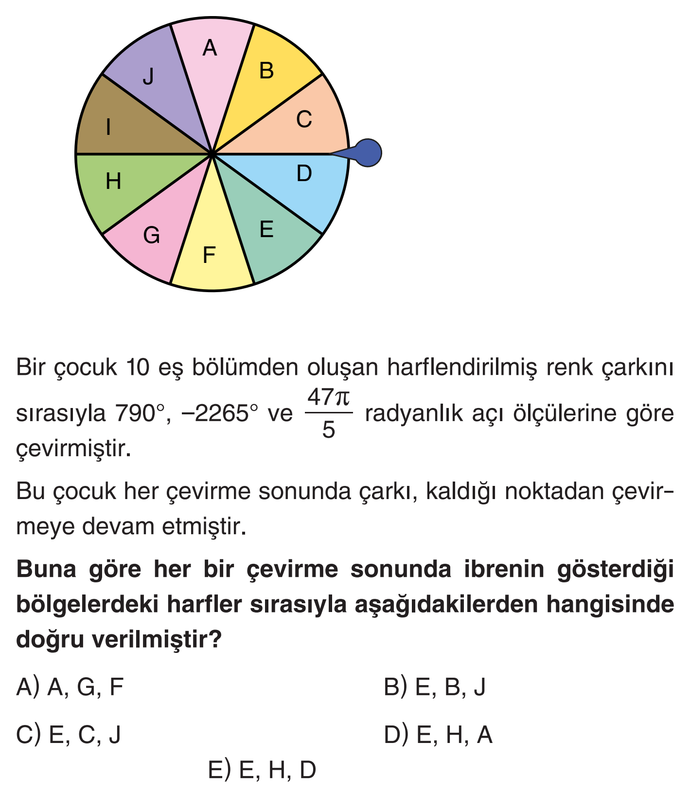
Çözüm
- 10 eş bölüm → her bölüm $36^\circ$. $790^\circ$ → $70^\circ$: ibrenin $70^\circ$ altındaki E bölümü ibreye gelir.
- $-2265^\circ$ → $+255^\circ$; toplam $70^\circ + 255^\circ = 325^\circ$ → ibrenin $35^\circ$ üstündeki C gelir.
- $\frac{47\pi}{5} = 1692^\circ$ → $252^\circ$; toplam $577^\circ \to 217^\circ$ → ibrenin $143^\circ$ üstündeki J gelir. E, C, J.
Cevap: C
Soru 24Cevap: E
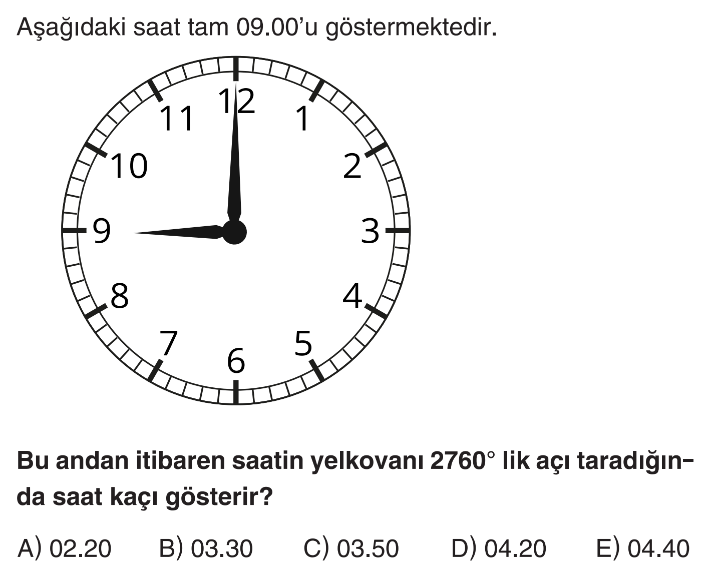
Çözüm
- Yelkovan 1 saatte $360^\circ$ döner.
- $2760^\circ = 7\cdot 360^\circ + 240^\circ$ → 7 saat ve $\frac{240}{360}\cdot 60 = 40$ dakika.
- 09.00 + 7 saat 40 dakika = 16.40, yani saat 04.40'ı gösterir.
Cevap: E